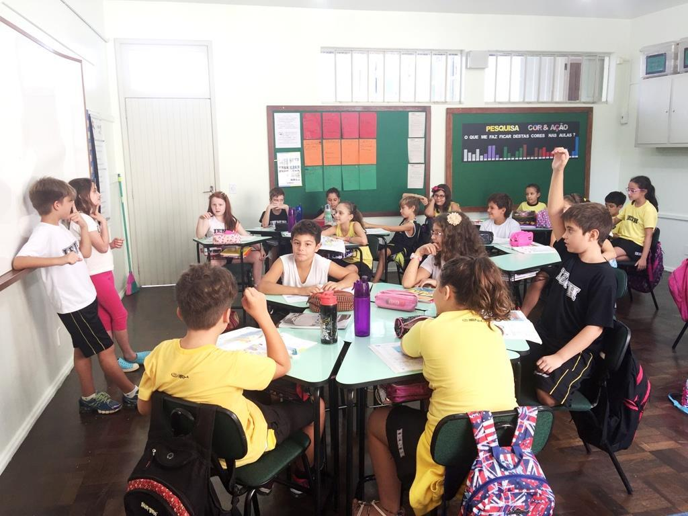

MINHA OPINIÃO SOBRE QUANTO É INVESTIDO
NAS ESCOLAS BRASILEIRAS
Para mim escola é um lugar onde você aprende e se prepara para a sua vida como adulto,
para você não sofrer dificuldades no futuro, conviver com amigos ao seu lado, ter mais
educação e etc.

Nas escolas publicas do Brasil, os alunos não tem um estudo tão bom quanto escolas particulares.
Por que?
Porque os politicos não investem muito dinheiro nas escolas e roubam o dinheiro só para eles e dei
xam as escolas em uma situação precaria
E essa é a minha opinião sobre isso, agradeço pela atenção, vlw flw.